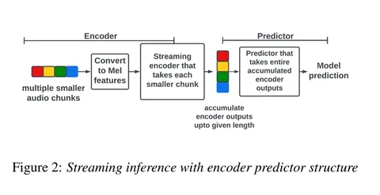
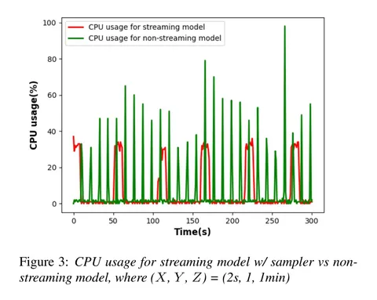

Сегодня разбираем статью от Meta* о решении SMARTMOS, применяемом в звонках (WhatsApp и др.) для оценки качества звука после шумоподавления и других алгоритмов обработки. В продакшене важно не только понимать общий показатель качества, но и иметь возможность разложить его на составляющие: насколько хорошо слышна речь, насколько повлияли потери пакетов, сколько шума осталось и какую аудиозапись в итоге получает собеседник на свой девайс. Именно такую детализированную оценку даёт SMARTMOS.
Для этой задачи использована небольшая стриминговая нейросеть. Она работает прямо на устройстве и предсказывает скоры для двух задач по 10-секундному сегменту аудио: Noise Suppression (NS) и Packet Loss Concealment (PLC). Внутри Noise Suppression есть разделение по аспектам: Speech MOS, Noise MOS и Overall MOS. Интересно, что архитектура энкодера совпадает с используемой в оффлайн-ASR в умных очках Meta.
Обучение делается на сегментах длиной около 10 секунд. Логика в том, что на длинных кусках качество можно оценить надёжнее, поскольку короткие отрезки в середине разговора могут давать искажённые результаты.
Данные для обучения собираются из тестов реальных приложений — в релизном процессе есть тестировщики, которые записывают аудио по сценариям, эти записи логируются и размечаются людьми. Чтобы компенсировать нехватку данных, авторы использовали не только человеческую разметку (MOS-оценки), но и часть выборки с semi-supervised-метками.
Чтобы модель была достаточно лёгкой для запуска на любых устройствах, применяются оптимизации:
— используется VAD, тишина дропается, чтобы не тратить ресурсы;
— сегменты фиксированы по 10 секунд;
— энкодер принимает куски по 100 мс, обрабатывая их в стримминговом режиме;
— декодер (предиктор) аккумулирует все выходы энкодера и выдаёт одну оценку на весь сегмент.
Такой подход позволяет существенно снизить нагрузку на CPU: пиковая нагрузка распределяется более равномерно по времени.
Meta уже использует это решение в продакшене на всех типах звонков. Подобные решения будут полезны всем, кто делает продукты для звонков. В реальности у нас почти никогда нет простого способа измерить, насколько хорошо работает шумоподавление. Модель вроде SMARTMOS могла бы закрыть этот пробел и дать мониторинг качества прямо в проде.
Борис Шелудько
* Компания Meta, владеющая WhatsApp, признана экстремистской; её деятельность в России запрещена.
